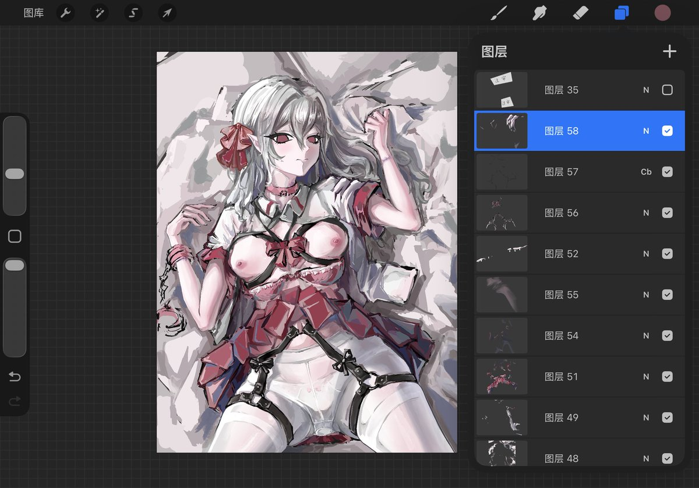

其实我故意拖着一直不细化眼睛的原因之一是刻画了眼睛以及面部彩妆之后完成度就会显著提高，这样的话再去画其他的部分就有一种在“收尾”以及为了满足科研心才去不断细化的感觉，慢慢就不想画了。所以习惯把眼睛拖到其他部分都细化的画不下去了再去画眼睛


绘画进度分享
今日绘图进度upup
（这个史诗级绝色震撼无敌黄暴的衣下皮带捆绑idea是我在做工图作业的时候突然冒出来的，，我果然是天才。（作业做到一半小头发力了说是，，）
（以及我增加了一些瑟琴后门小玩具（诶嘿（100%听从xp）
画累了！刷会手机美美睡觉觉嗷 https://t.co/wDX7aE6ldD https://t.co/1HCPUSouMh
今日绘图进度upup
（这个史诗级绝色震撼无敌黄暴的衣下皮带捆绑idea是我在做工图作业的时候突然冒出来的，，我果然是天才。（作业做到一半小头发力了说是，，）
（以及我增加了一些瑟琴后门小玩具（诶嘿（100%听从xp）
画累了！刷会手机美美睡觉觉嗷 https://t.co/wDX7aE6ldD https://t.co/1HCPUSouMh